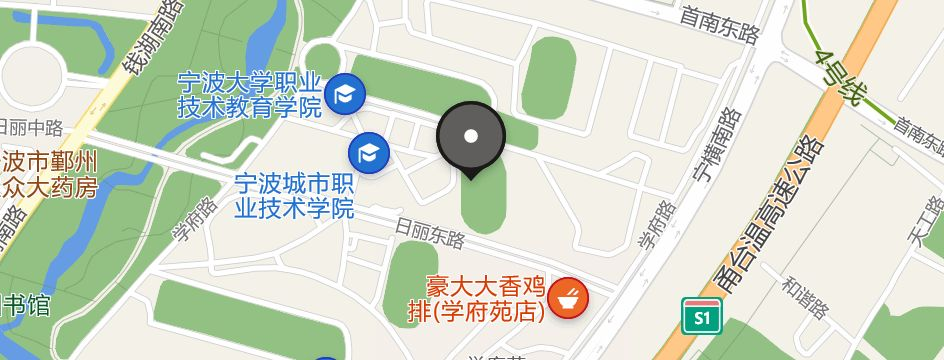
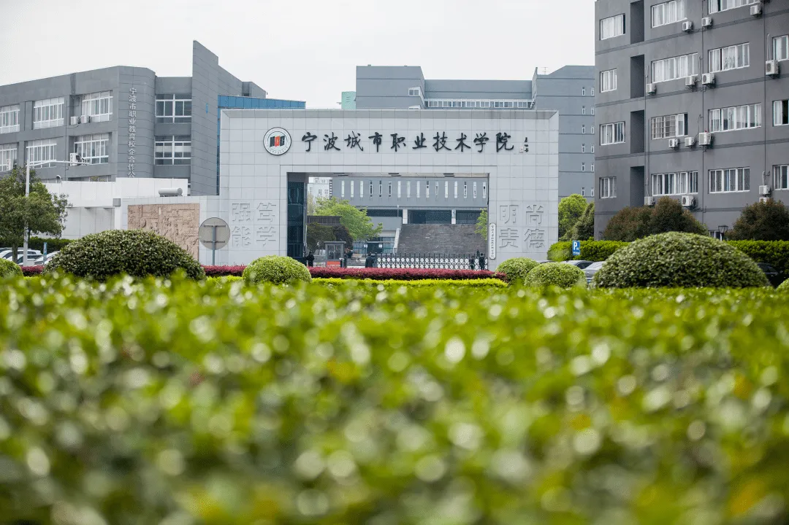

 Ningbo City Vocational and technical college was founded in 2003. Its predecessor is the College of Vocational and technical education of Ningbo University. It is a full-time ordinary higher vocational college for training high-quality technical and skilled applied talents for modern service industry. In 1992, Mr. Shao Yifu donated money to build the former Ningbo Normal University "Yifu higher vocational and technical education center", which is one of the earliest institutions to carry out full-time higher vocational and technical education in Zhejiang Province. In 1996, the former Ningbo University, the former Ningbo Normal University and the former Ningbo Branch of Zhejiang Fisheries University merged to form a new Ningbo University and set up the College of Vocational and technical education of Ningbo University. In 2000, the former Ningbo ocean School of the State Oceanic Administration and the former Ningbo Forestry School of the State Forestry Administration were incorporated into Ningbo University. The majors and personnel of the former Ningbo forestry school and some majors and personnel of the former Ningbo ocean school were transferred to the vocational education college. In 2003, the provincial government approved the establishment of an independent Ningbo City Vocational and technical college on the basis of the Vocational Education College of Ningbo University.
 The school adheres to building morality and cultivating people, runs the ideological and political work through the whole process of education and teaching, takes the development of teachers and students as the starting point and final destination of all work, and strives to create a good atmosphere for all staff to serve teaching and the development of teachers and students. The school's ideological and political work mechanism of joint management by the party, government, work group and all departments working together has been continuously improved, and the student guidance and service system has been continuously improved.